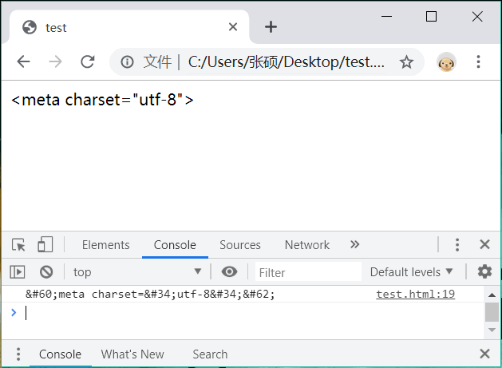

首页 > 编程笔记
JS正则表达式语法大全（非常详细）
前面几节讲解了如何在 JavaScript 中使用正则表达式，以及如何执行匹配，本节就来讲一下正则表达式的具体语法。
正则表达式是一种通用的工具，在 JavaScript、PHP、Java、Python、C++ 等几乎所有的编程语言中都能使用；但是，不同编程语言对正则表达式语法的支持不尽相同，有的编程语言支持所有的语法，有的仅支持一个子集。本节讲到的正则表达式语法适用于 JavaScript。
正则表达式的语法体现在字符模式上。字符模式是一组特殊格式的字符串，它由一系列特殊字符和普通字符构成，其中每个特殊字符都包含一定的语义和功能。
元字符就是拥有特动功能的特殊字符，大部分需要加反斜杠进行标识，以便于普通字符进行区别，而少数元字符，需要加反斜杠，以便转译为普通字符使用。JavaScript 正则表达式支持的元字符如表所示。
表示字符的方法有多种，除了可以直接使用字符本身外，还可以使用 ASCII 编码或者 Unicode 编码来表示。
在 RegExp() 构造函数中使用元字符时，应使用双斜杠。
如果匹配任意 ASCII 字符：
1) 匹配任意数字或字母
1) 如果仅匹配单词 ggle 和 gogle，可以设计：
2) 如果匹配第 4 个单词 gooogle，可以设计：
3) 如果匹配第 4 个到第 6 个之间的单词，可以设计：
4) 如果匹配所有单词，可以设计：
5) 如果匹配包含字符“o”的所有词，可以设计：
重复类量词总是出现在它们所作用的字符或子表达式后面。如果想作用于多个字符，需要使用小括号把它们包裹在一起形成一个子表达式。
针对 6 种重复类惰性匹配的简单描述如下：
下面代码演示如何使用边界量词。先定义字符串：
下面代码定义一个正前向生命的匹配模式。
下面代码定义一个反前向生命的匹配模式。
通过分组可以在一个完整的字符模式中定义一个或多个子模式。当正则表达式成功地匹配目标字符串后，也可以从目标字符串中抽出与子模式相匹配的子内容。
由于子表达式可以相互嵌套，它们的顺序将根据左括号的顺序来确定。例如，下面示例定义匹配模式包含多个子表达式。
对子表达式的引用，是指引用前面子表达式所匹配的文本，而不是子表达式的匹配模式。如果要引用前面子表达式的匹配模式，则必须使用下面方式，只有这样才能够达到匹配目的。
反向引用在开发中主要有以下几种常规用法。
实现方法：在左括号的后面加上一个问号和冒号。
正则表达式是一种通用的工具，在 JavaScript、PHP、Java、Python、C++ 等几乎所有的编程语言中都能使用；但是，不同编程语言对正则表达式语法的支持不尽相同，有的编程语言支持所有的语法，有的仅支持一个子集。本节讲到的正则表达式语法适用于 JavaScript。
正则表达式的语法体现在字符模式上。字符模式是一组特殊格式的字符串，它由一系列特殊字符和普通字符构成，其中每个特殊字符都包含一定的语义和功能。
描述字符
根据正则表达式语法规则，大部分字符仅能够描述自身，这些字符被称为普通字符，如所有的字母、数字等。元字符就是拥有特动功能的特殊字符，大部分需要加反斜杠进行标识，以便于普通字符进行区别，而少数元字符，需要加反斜杠，以便转译为普通字符使用。JavaScript 正则表达式支持的元字符如表所示。
| 元字符 | 描述 |
|---|---|
| . | 查找单个字符，除了换行和行结束符 |
| \w | 查找单词字符 |
| \W | 查找非单词字符 |
| \d | 查找数字 |
| \D | 查找非数字字符 |
| \s | 查找空白字符 |
| \S | 查找非空白字符 |
| \b | 匹配单词边界 |
| \B | 匹配非单词边界 |
| \0 | 查找 NUL字符 |
| \n | 查找换行符 |
| \f | 查找换页符 |
| \r | 查找回车符 |
| \t | 查找制表符 |
| \v | 查找垂直制表符 |
| \xxx | 查找以八进制数 xxxx 规定的字符 |
| \xdd | 查找以十六进制数 dd 规定的字符 |
| \uxxxx | 查找以十六进制 xxxx规定的 Unicode 字符 |
表示字符的方法有多种，除了可以直接使用字符本身外，还可以使用 ASCII 编码或者 Unicode 编码来表示。
示例1
下面使用 ASCII 编码定义正则表达式直接量。var r = /\x61/; var s = "JavaScript"; var a = s.match(s);由于字母 a 的 ASCII 编码为 97，被转换为十六进制数值后为 61，因此如果要匹配字符 a，就应该在前面添加“\x”前缀，以提示它为 ASCII 编码。
示例2
除了十六进制外，还可以直接使用八进制数值表示字符。var r = /\141/; var s = "JavaScript"; var a = s.match(r);使用十六进制需要添加“\x”前缀，主要是为了避免语义混淆，而八进制则不需要添加前缀。
示例3
ASCII 编码只能够匹配有限的单字节字符，使用 Unicode 编码可以表示双字节字符。Unicode 编码方式：“\u”前缀加上 4 位十六进制值。var r = "/\u0061/"; var s = "JavaScript"; var a = s.match(s);
在 RegExp() 构造函数中使用元字符时，应使用双斜杠。
var r = new RegExp("\\u0061");
RegExp() 构造函数的参数只接受字符串，而不是字符模式。在字符串中，任何字符加反斜杠还表示字符本身，如字符串“\u”就被解释为 u 本身，所以对于“\u0061”字符串来说，在转换为字符模式时，就被解释为“u0061”，而不是“\u0061”，此时反斜杠就失去转义功能。解决方法：在字符 u 前面加双反斜杠。
描述字符范围
在正则表达式语法中，放括号表示字符范围。在方括号中可以包含多个字符，表示匹配其中任意一个字符。如果多个字符的编码顺序是连续的，可以仅指定开头和结尾字符，省略中间字符，仅使用连字符~表示。如果在方括号内添加脱字符^前缀，还可以表示范围之外的字符。例如：
- [abc]：查找方括号内任意一个字符。
- [^abc]：查找不在方括号内的字符。
- [0-9]：查找从 0 至 9 范围内的数字，即查找数字。
- [a-z]：查找从小写 a 到小写 z 范围内的字符，即查找小写字母。
- [A-Z]：查找从大写 A 到大写 Z 范围内的字符，即查找大写字母。
- [A-z]：查找从大写 A 到小写 z 范围内的字符，即所有大小写的字母。
示例1
字符范围遵循字符编码的顺序进行匹配。如果将要匹配的字符恰好在字符编码表中特定区域内，就可以使用这种方式表示。如果匹配任意 ASCII 字符：
var r = /[\u0000-\u00ff]/g;如果匹配任意双字节的汉字：
var r = /[^\u0000-\u00ff]/g;如果匹配任意大小写字母和数字：
var r = /[a-zA-Z0-9]/g;使用 Unicode 编码设计，匹配数字：
var r = /[\u0030-\u0039]/g;使用下面字符模式可以匹配任意大写字母：
var r = /[\u0041-\u004A]/g;使用下面字符模式可以匹配任意小写字母：
var r = /[\u0061-\u007A]/g;
示例2
在字符范围内可以混用各种字符模式。var s = "abcdez"; //字符串直接量 var r = /[abce-z]/g; //字符a、b、c，以及从e~z之间的任意字符 var a = s.match(r); //返回数组["a","b","c","e","z"]
示例3
在中括号内不要有空格，否则会误解为还要匹配空格。var r = /[0-9]/g;
示例4
字符范围可以组合使用，以便设计更灵活的匹配模式。var s = "abc4 abd6 abe3 abf1 abg7"; //字符串直接量 var r = /ab[c-g][1-7]/g; //前两个字符为ab，第三个字符为从c到g，第四个字符为1~7的任意数字 var a = s.match(r); //返回数组["abc4","abd6","abe3","abf1","abg7"]
示例5
使用反义字符范围可以匹配很多无法直接描述的字符，达到以少应多的目的。var r = /[^0123456789]/g;在这个正则表达式中，将会匹配除了数字以外任意的字符。反义字符类比简单字符类的功能更强大和实用。
选择匹配
选择匹配类似于 JavaScript 的逻辑与运算，使用竖线|描述，表示在两个子模式的匹配结果中任选一个。例如：1) 匹配任意数字或字母
var r = /\w+|\d+/;2) 可以定义多重选择模式。设计方法：在多个子模式之间加入选择操作符。
var r = /(abc)|(efg)|(123)|(456)/;为了避免歧义，应该为选择操作的多个子模式加上小括号。
示例
设计对提交的表单字符串进行敏感词过滤。先设计一个敏感词列表，然后使用竖线把它们连接在一起，定义选择匹配模式，最后使用字符串的 replace() 方法把所有敏感字符替换为可以显示的编码格式。代码如下：
var s = '<meta charset="utf-8">'; //待过滤的表单提交信息
var r = /\'|\"|\<|\>/gi; //过滤敏感字符的正则表达式
function f() { //替换函数
////把敏感字符替换为对应的网页显示的编码格式
return "&#" + arguments[0].charCodeAt(0) + ";";
}
var a =s.replace(r,f); //执行过滤替换
document.write(a); //在网页中显示正常的字符信息
console.log(a);
显示结果如下：

重复匹配
在正则表达式语法中，定义了一组重复类量词，如表所示。它们定义了重复匹配字符的确数或约数。| 量词 | 描述 |
|---|---|
| n+ | 匹配任何包含至少一个 n 的字符串 |
| n* | 匹配任何包含零个或多个 n 的字符串 |
| n? | 匹配任何包含零个或一个 n 的字符串 |
| n{x} | 匹配包含 x 个 n 的序列的字符串 |
| n{x,y} | 匹配包含最少 x 个、最多 y 个 n 的序列的字符串 |
| n{x,} | 匹配包含至少 x 个 n 的序列的字符串 |
示例
下面结合示例进行演示说明，先设计一个字符串：var s = "ggle gogle google gooogle goooogle gooooogle goooooogle gooooooogle goooooooogle";
1) 如果仅匹配单词 ggle 和 gogle，可以设计：
var r = /go?gle/g; var a = s.match(r);量词
?表示前面字符或子表达式为可有可无，等效于：
var r = /go{0,1}gle/g;
var a = s.match(r);
2) 如果匹配第 4 个单词 gooogle，可以设计：
var r = /go{3}gle/g;
var a = s.match(r);
等效于：
var r = /gooogle/g; var a = s.match(r);
3) 如果匹配第 4 个到第 6 个之间的单词，可以设计：
var r = /go{3,5}gle/g;
var a = s.match(r);
4) 如果匹配所有单词，可以设计：
var r = /go*gle/g; var a = s.match(r);量词
*表示前面字符或表达式可以不出现，或者重复出现任意多次。等效于：
var r = /go(0,)gle/g; var a = s.match(r);
5) 如果匹配包含字符“o”的所有词，可以设计：
var r = /go+gle/g; var a = s.match(r);量词
+表示前面字符或子表达式至少出现 1 次，最多重复次数不限。等效于：
var r = /go{1,}gle/g;
var a = s.match(r);
重复类量词总是出现在它们所作用的字符或子表达式后面。如果想作用于多个字符，需要使用小括号把它们包裹在一起形成一个子表达式。
惰性匹配
重复类量词都具有贪婪性，在条件允许的前提下，会匹配尽可能多的字符。- ?、{n} 和 {n,m} 重复类具有弱贪婪性，表现为贪婪的有限性。
- *、+ 和 {n,} 重复类具有强贪婪性，表现为贪婪的无限性。
示例1
越是排在左侧的重复类量词匹配优先级越高。下面示例显示当多个重复类量词同时满足条件时，会在保证右侧重复类量词最低匹配次数基础上，使最左侧的重复类量词尽可能占有所有字符。var s = "<html><head><title></title></head><body></body></html>"; var r = /(<.*>)(<.*>)/ var a = s.match(r); //左侧表达式匹配"<html><head><title></title></head><body></body></html>" console.log(a[1])； console.log(a[2]); //右侧表达式匹配“</html>”与贪婪匹配相反，惰性匹配将遵循另一种算法：在满足条件的前提下，尽可能少的匹配字符。定义惰性匹配的方法：在重复类量词后面添加问号?限制词。贪婪匹配体现了最大化匹配原则，惰性匹配则体现最小化匹配原则。
示例2
下面示例演示了如何定义匹配模式。var s = "<html><head><title></title></head><body></body></html>"; var r = /<.*?>/ var a = s.match(r); //返回单个元素数组["<html>"]在上面示例中，对于正则表达式 /<.*?>/ 来说，它可以返回匹配字符串 "<>"，但是为了能够确保匹配条件成立，在执行中还是匹配了带有 4 个字符的字符串“html”。惰性取值不能够以违反模式限定的条件而返回，除非没有找到符合条件的字符串，否则必须满足它。
针对 6 种重复类惰性匹配的简单描述如下：
- {n,m}?：尽量匹配 n 次，但是为了满足限定条件也可能最多重复 m 次。
- {n}?：尽量匹配 n 次。
- {n,}?：尽量匹配 n 次，但是为了满足限定条件也可能匹配任意次。
- ??：尽量匹配，但是为了满足限定条件也可能最多匹配 1 次，相当于 {0,1}?。
- +?：尽量匹配 1 次，但是为了满足限定条件也可能匹配任意次，相当于 {1,}?。
- *? ：尽量不匹配，但是为了满足限定条件也可能匹配任意次，相当于 {0,}?。
边界量词
边界就是确定匹配模式的位置，如字符串的头部或尾部，具体说明如表所示。| 量词 | 说明 |
|---|---|
| ^ | 匹配开头，在多行检测中，会匹配一行的开头 |
| $ | 匹配结尾，在多行检测中，会匹配一行的结尾 |
下面代码演示如何使用边界量词。先定义字符串：
var s = "how are you"1) 匹配最后一个单词
var r = /\w+$/; var a = s.match(r); //返回数组["you"]2) 匹配第一个单词
var r = /^\w+/; var a = s.match(r); //返回数组["how"]3) 匹配每一个单词
var r = /\w+/g; var a = s.match(r); //返回数组["how","are","you"]
声明词量
声明表示条件的意思。声明词量包括正向声明和反向声明两种模式。正向声明
指定匹配模式后面的字符必须被匹配，但又不返回这些字符。语法格式如下：匹配模式 (?= 匹配条件)
声明包含在小括号内，它不是分组，因此作为子表达式。下面代码定义一个正前向生命的匹配模式。
var s = "one : 1; two : 2"; var r = /\w*(?==)/; //使用正前向声明，指定执行匹配必须满足的条件 var a = s.match(r); //返回数组["two"]在上面示例中，通过
?==锚定条件，指定只有在 \w* 所能够匹配的字符后面跟随一个等号字符，才能够执行 \w* 匹配。所以，最后匹配的字符串“two”，而不是字符串“one”。
反向声明
与正向声明匹配相反，指定接下来的字符都不必被匹配。语法格式如下：匹配模式(?! 匹配条件)
下面代码定义一个反前向生命的匹配模式。
var s = "one : 1; two : 2"; var r = /\w*(?!=)/; //使用正前向声明，指定执行匹配不必满足的条件 var a = s.match(r); //返回数组["one"]在上面示例中，通过
?!=锚定条件，指定只有在“\w*”所能够匹配的字符后面不跟随一个等号字符，才能够执行 \w*匹配。所以，最后匹配的是字符串“one”，而不是字符串“two”。
子表达式
使用小括号可以对字符模式进行任意分组，在小括号内的字符串表示子表达式，也称为子模式。子表达式具有独立的匹配功能，保存独立的匹配结果；同时，小括号后的量词将会作用于整个子表达式。通过分组可以在一个完整的字符模式中定义一个或多个子模式。当正则表达式成功地匹配目标字符串后，也可以从目标字符串中抽出与子模式相匹配的子内容。
示例
在下面代码中，不仅能匹配出每个变量声明，同时还抽出每个变量及其值。
var s = "ab=21, bc=45, cd=43";
var r = /(\w+)=(\d*)/g;
while (a = r.exec(s)) {
console.log(a); //返回类似["ab=21","bc=45","cd=43"]三个数组
}
反向引用
在字符模式中，后面的字符可以引用前面的子表达式。实现方法如下：\+ 数字
数字指定了子表达式在字符模式中的顺序。如“\1”引用的是第 1 个子表达式，“\2”引用的是第 2 个子表达式。示例1
在下面代码中，通过引用前面子表达式匹配的文本，实现成组匹配字符串。var s = "<h1>title<h1><p>text<p>"; var r = /(<\/?\w+>)\1/g; var a = s.match(r); //返回数组["<h1>title<h1>","<p>text<p>"]
由于子表达式可以相互嵌套，它们的顺序将根据左括号的顺序来确定。例如，下面示例定义匹配模式包含多个子表达式。
var s = "abc"; var r = /(a(b(c)))/; var a = s.match(r); //返回数组["abc","abc","bc","c"]在这个模式中，共产生了 3 个反向引用，第一个是“(a(b(c)))”，第二个是“(b(c))”，第三个是“(C)”。它们引用的匹配文本分别是字符串“abc”、“bc”和“c”。
对子表达式的引用，是指引用前面子表达式所匹配的文本，而不是子表达式的匹配模式。如果要引用前面子表达式的匹配模式，则必须使用下面方式，只有这样才能够达到匹配目的。
var s = "<h1>title</h1><p>text</p>"; var r = /((<\/?\w+>).*(<\/?\w+>))/g; var a = s.match(r); //返回数组["<h1>title</h1>","<p>text</p>"]
反向引用在开发中主要有以下几种常规用法。
示例2
在正则表达式对象的 test() 方法中，以及字符串对象的 match() 和 search() 等方法中使用。在这些方法中，反向引用的值可以从 RegExp() 构造函数中获得。var s = "abcdefghijklmn"; var r = /(\w)(\w)(\w)/; r.test(s); console.log(RegExp.$1); //返回第1个子表达式匹配的字符a console.log(RegExp.$2); //返回第2个子表达式匹配的字符b console.log(RegExp.$3); //返回第3个子表达式匹配的字符c通过上面示例可以看到，正则表达式执行匹配检测后，所有子表达式匹配的文本都被分组存储在 RegExp() 构造函数的属性内，通过前缀符号
$与正则表达式中子表达式的编号来引用这些临时属性。其中属性 $1 标识符指向第 1 个值引用，属性 $2 标识符指向第 2 个值引用。
示例3
可以直接在定义的字符模式中包含反向引用。这可以通过使用特殊转义序列（如 \1、\2 等）来实现。var s = "abcbcacba"; var r = /(\w)(\w)(\w)\2\3\1\3\2\1/; var b = r.test(s); //验证正则表达式是否匹配该字符串 console.log(b); //返回true在上面示例的正则表达式中，“\1”表示对第 1 个反向引用 (\w) 所匹配的字符 a 进行引用，“\2”表示对第 2 个反向引用 (\w) 所匹配的字符串 b 进行引用，“\3”表示对第 3 个反向引用 (\w) 所匹配的字符 c 进行引用。
示例4
可以在字符串对象的 replace() 方法中使用。通过使用特殊字符序列$1、$2、$3 等来实现。例如，在下面的示例中将颠倒相邻字母和数字的位置。var s = "aa11bb22c3d4e5f6"; var r = /(\w+?)(\d+)/g; var b = s.replace(r,"$2$1"); console.log(b); //返回字符串“aa11bb22c3 d4e5f6”在上面例子中，正则表达式包括两个分组，第 1 个分组匹配任意连续的字母，第 2 个分组匹配任意连续的数字。在 replace() 方法的第 2 个参数中，$1 表示对正则表达式中第 1 个子表达式匹配文本的引用，而 $2 表示对正则表达式中第 2 个子表达式匹配文本的引用，通过颠倒 $1 和 $2 标识符的位置，即可实现字符串的颠倒来替换原字符串。
禁止引用
反向引用会占用一定的系统资源，在较长的正则表达式中，反向引用会降低匹配速度。如果分组仅仅是为了方便操作，可以禁止反向引用。实现方法：在左括号的后面加上一个问号和冒号。
var s1 = "abc"; var r = /(?:\w*?)|(?:\d*?)/; var a = r.test(si);非引用型分组必须使用子表达式，但是又不希望存储无用的匹配信息，或者希望提高匹配速度来说，是非常重用的方法。
关注公众号「站长严长生」，在手机上阅读所有教程，随时随地都能学习。内含一款搜索神器，免费下载全网书籍和视频。

微信扫码关注公众号